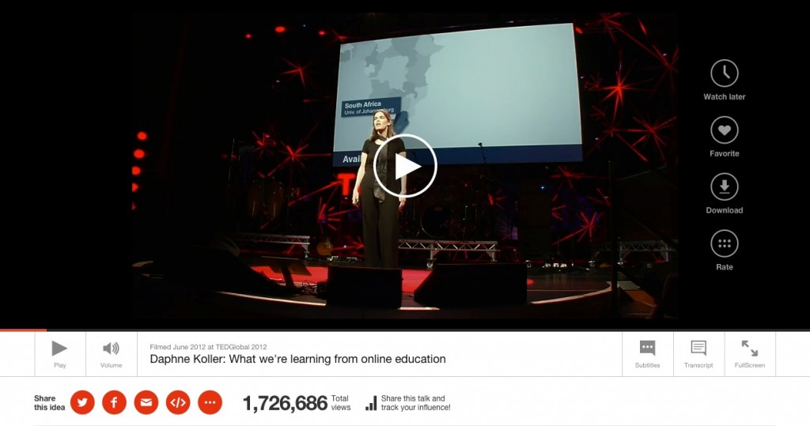
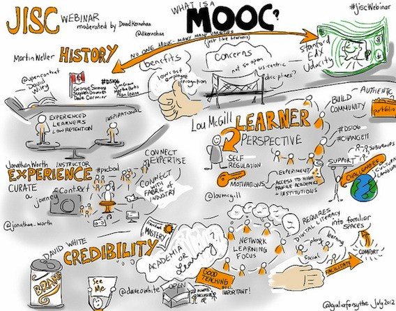
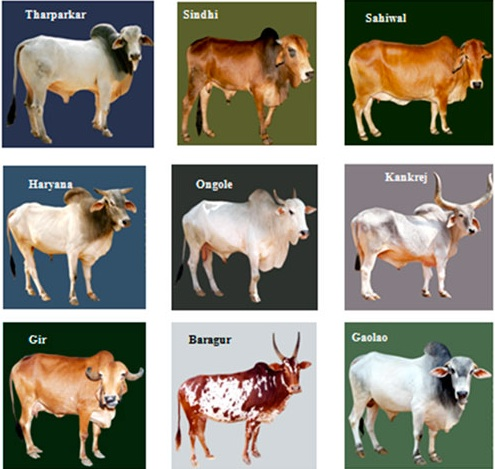
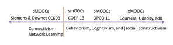
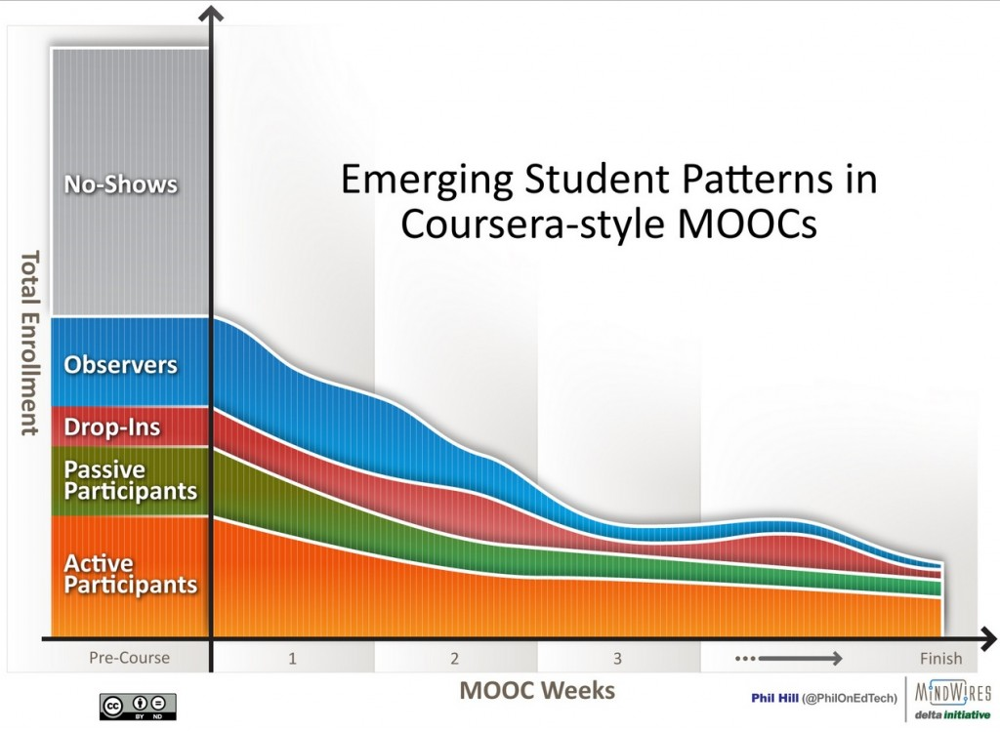
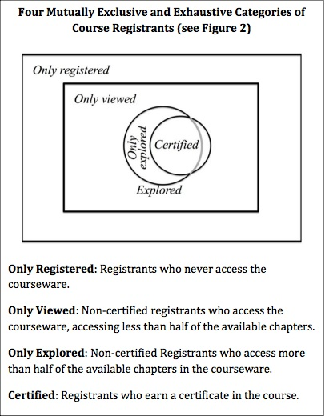
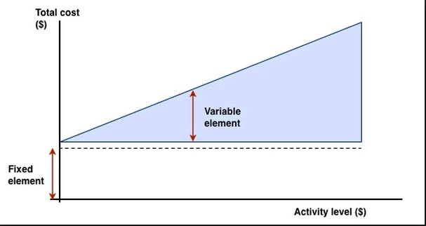

Chapter 5
Teaching in a Digital Age

This chapter covers the following topics:
Also in this chapter you will find the following activities:
To see this YouTube video, click on the graphic. For a response to this video, see: ‘What’s right and what’s wrong with Coursera-style MOOCs’.
The term MOOC was used for the first time in 2008 for a course offered by the Extension Division of the University of Manitoba in Canada. This non-credit course, Connectivism and Connective Knowledge (CK08) was designed by George Siemens, Stephen Downes and Dave Cormier. It enrolled 27 on-campus students who paid a tuition fee but was also offered online for free. Much to the surprise of the instructors, 2,200 students enrolled in the free online version. Downes classified this course and others like it that followed as connectivist or cMOOCs, because of their design (Downes, 2012).
In the fall of 2011, two computer science professors from Stanford University, Sebastian Thrun and Peter Norvig, launched a MOOC on The Introduction to AI (artificial intelligence) that attracted over 160,000 enrollments, followed quickly by two other MOOCs, also in computer sciences, from Stanford instructors Andrew Ng and Daphne Koller. Thrun went on to found Udacity, and Ng and Koller established Coursera. These are for-profit companies using their own specially developed software that enable massive numbers of registrations and a platform for the teaching. Udacity and Coursera formed partnerships with other leading universities where the universities pay a fee to offer their own MOOCs through these platforms. Udacity more recently has changed direction and is now focusing more on the vocational and corporate training market.
The Massachusetts Institute of Technology (MIT) and Harvard University in March 2012 developed an open source platform for MOOCs called edX, which also acts as a platform for online registration and teaching. edX has also developed partnerships with leading universities to offer MOOCs without direct charge for hosting their courses, although some may pay to become partners in edX. Other platforms for MOOCs, such as the U.K. Open University’s FutureLearn, have also been developed. Because the majority of MOOCs offered through these various platforms are based mainly on video lectures and computer-marked tests, Downes has classified these as xMOOCs, to distinguish them from the more connectivist cMOOCs.
In March, 2015 there were just over 4,000 MOOCs globally, of which just over 1,000 were from European institutions.
Downes, S. (2012) Massively Open Online Courses are here to stay, Stephen’s Web, July 20

Probably no development in teaching in recent years has been as controversial as the development of Massive Open Online Courses (MOOCs). In 2013, the writer Thomas Friedman wrote in the New York Times:
...nothing has more potential to enable us to reimagine higher education than the massive open online course ….For relatively little money, the U.S. could rent space in an Egyptian village, install two dozen computers and high-speed satellite Internet access, hire a local teacher as a facilitator, and invite in any Egyptian who wanted to take online courses with the best professors in the world, subtitled in Arabic…I can see a day soon where you’ll create your own college degree by taking the best online courses from the best professors from around the world ….paying only the nominal fee for the certificates of completion. It will change teaching, learning and the pathway to employment.
Many others have referred to MOOCs as a prime example of the kind of disruptive technology that Clayton Christensen (2010) has argued will change the world of education. Others have argued that MOOCs are not a big deal, just a more modern version of educational broadcasting, and do not really affect the basic fundamentals of education, and in particular do not address the type of learning needed in a digital age.
MOOCs can be seen then as either a major revolution in education or just another example of the overblown hyperbole often surrounding technology, particularly in the USA. I shall be arguing that MOOCs are a significant development, but they have severe limitations for developing the knowledge and skills needed in a digital age.
All MOOCs have some common features, although we shall see that the term MOOC covers an increasingly wide range of designs.
In the four years following its launch in 2011, Coursera claims over 12 million sign-ups with its largest course claiming 240,000 participants. The huge numbers (in the hundred of thousands) enrolling in the earliest MOOCs are not always replicated in later MOOCs, but the numbers are still substantial. For instance, in 2013, the University of British Columbia offered several MOOCs through Coursera, with the numbers initially signing up ranging from 25,000 to 190,000 per course (Engle, 2014).
However, even more important than the actual numbers is that in principle MOOCs have infinite scalability. There is technically no limit to their final size, because the marginal cost of adding each extra participant is nil for the institutions offering MOOCs. (In practice this is not quite true, as central technology, backup and bandwidth costs increase, and as we shall see, there can be some knock-on costs for an institution offering MOOCs as numbers increase. However, the cost of each additional participant is so small, given the very large numbers, that it can be more or less ignored). The scalability of MOOCs is probably the characteristic that has attracted the most attention, especially from governments, but it should be noted that this is also a characteristic of broadcast television and radio, so it is not unique to MOOCs.
There are no pre-requisites for participants other than access to a computer/mobile device and the Internet. However, broadband access is essential for xMOOCs that use video streaming, and probably desirable even for cMOOCs. Furthermore, at least for the initial MOOCs, access is free for participants, although an increasing number of MOOCs are charging a fee for assessment leading to a badge or certificate.
However, there is one significant way in which MOOCs through Coursera are not fully open (see Chapter 10 for more on what constitutes ‘open’ in education). Coursera owns the rights to the materials, so they cannot be repurposed or reused without permission, and the material may be removed from the Coursera site when the course ends. Also, Coursera decides which institutions can host MOOCs on its platform – this is not an open access for institutions. On the other hand, edX is an open source platform, so any institution that joins edX can develop their own MOOCs with their own rules regarding rights to the material. cMOOCs are generally completely open, but since individual participants of cMOOCs create a lot if not all of the material it is not always clear whether they own the rights and how long the MOOC materials will remain available.
It should also be noted that many other kinds of online material are also open and free over the Internet, often in ways that are more accessible for reuse than MOOC material (see Chapter 10).
MOOCs are offered at least initially wholly online, but increasingly institutions are negotiating with the rights holders to use MOOC materials in a blended format for use on campus. In other words, the institution provides learner support for the MOOC materials through the use of campus-based instructors. For instance at San Jose State University, on-campus students used MOOC materials from Udacity courses, including lectures, readings and quizzes, and then instructors spent classroom time on small-group activities, projects and quizzes to check progress (Collins, 2013). More variations in the design of MOOCs will be discussed in more detail in Section 5.3.
Again though it should be noted that MOOCs are not unique in offering courses online. There are over 7 million students in the USA alone taking online courses for credit, as part of regular degree programs.
One characteristic that distinguishes MOOCs from most other open educational resources is that they are organized into a whole course.
However, what this actually means for participants is not exactly clear. Although many MOOCs offer certificates or badges for successful completion of a course, to date these have not been accepted for admission or for credit, even (or especially) by the institutions offering the MOOCs.
It can be seen that all the key characteristics of MOOCs exist in some form or other outside MOOCs. What makes MOOCs unique though is the combination of the four key characteristics, and in particular the fact that they scale massively and are open and free for participants.
Christensen, C. (2010) Disrupting Class, Expanded Edition: How Disruptive Innovation Will Change the Way the World Learns New York: McGraw-Hill
Collins, E. (2013) SJSU Plus Augmented Online Learning Environment Pilot Project Report San Jose CA: San Jose State University
Engle, W. (2104) UBC MOOC Pilot: Design and Delivery Vancouver BC: University of British Columbia
Friedman, T. (2013) Revolution Hits the Universities New York Times, January 26

In this section the main MOOC designs will be analysed. However, MOOCs are a relatively new phenomenon, and design models are still evolving.
MOOCs developed initially by Stanford University professors and a little later by MIT and Harvard instructors are based primarily on a strongly behaviourist, information transmission model, the core teaching being through online recorded videos of short lectures, combined with computer automated testing, and sometimes also through the use of peer assessment. These MOOCs are offered through special cloud-based software platforms such as Coursera, Udacity and edX.
xMOOCs is a term coined by Stephen Downes (2012) for courses developed by Coursera, Udacity and edX. At the time of writing (2015) xMOOCs are by far the most common MOOC. Instructors have considerable flexibility in the design of the course, so there is considerable variation in the details, but in general xMOOCs have the following common design features:
xMOOCs use specially designed platform software that allows for the registration of very large numbers of participants, provides facilities for the storing and streaming on demand of digital materials, and automates assessment procedures and student performance tracking. It also allows the companies that provide the software to collect and analyse student data.
xMOOCs use the standard lecture mode, but delivered online by participants downloading on demand recorded video lectures. These video lectures are normally available on a weekly basis over a period of 10-13 weeks. Initially these were often 50 minute lectures, but as a result of experience some xMOOCs now are using shorter recordings (sometimes down to 15 minutes in length) and thus there may be more video segments. As well, xMOOC courses are becoming shorter in length, some now lasting only five weeks. Various video production methods have been used, including lecture capture (recording face-to-face on-campus lectures, then storing them and streaming them on demand), full studio production, or desk-top recording by the instructor.
Students complete an online test and receive immediate computerised feedback. These tests are usually offered throughout the course, and may be used just for participant feedback. Alternatively the tests may be used for determining the award of a certificate. Another option is for an end of course grade or certificate based solely on an end-of-course online test. Most xMOOC assignments are based on multiple-choice, computer-marked questions, but some MOOCs have also used text or formula boxes for participants to enter answers, such as coding in a computer science course, or mathematical formulae, and in one or two cases, short text answers, but in all cases these are computer-marked.
Some xMOOCs have experimented with assigning students randomly to small groups for peer assessment, especially for more open-ended or more evaluative assignment questions. This has often proved problematic though because of wide variations in expertise between the different members of a group, and because of the different levels of involvement in the course of different participants.
Sometimes copies of slides, supplementary audio files, urls to other resources, and online articles may be included for downloading by participants.
These are places where participants can post questions, ask for help, or comment on the content of the course.
The extent to which the discussion or comments are moderated varies probably more than any other feature in xMOOCs, but at its most, moderation is directed at all participants rather than to individuals. Because of the very large numbers participating and commenting, moderation of individual comments by the instructor(s) offering the MOOC is rarely possible, although there are some examples. Some instructors offer no moderation whatsoever, so participants rely on other participants to respond to questions or comments. Some instructors ‘sample’ comments and questions, and post comments in response to these. Some instructors use volunteers or paid teaching assistants to comb for or identify common areas of concern shared by a number of participants then the instructor or teaching assistants will respond. However, in most cases, participants moderate each other’s comments or questions.
Most xMOOCs award some kind of recognition for successful completion of a course, based on a final computer-marked assessment. However, at the time of writing, MOOC badges or certificates have not been recognised for credit or admission purposes even by the institutions offering a MOOC, or even when the lectures are the same as for on-campus students. No evidence exists to date about employer acceptance of MOOC qualifications.
Although to date there has not been a great deal of published information about the use of learning analytics in xMOOCs, the xMOOC platforms have the capacity to collect and analyse ‘big data’ about participants and their performance, enabling, at least in theory, for immediate feedback to instructors about areas where the content or design needs improving and possibly directing automated cues or hints for individuals.
xMOOCs therefore primarily use a teaching model focused on the transmission of information, with high quality content delivery, computer-marked assessment (mainly for student feedback purposes), and automation of all key transactions between participants and the learning platform. There is rarely any direct interaction between an individual participant and the instructor responsible for the course, although instructors may post general comments in response to a range of participants’ comments.
cMOOCs, the first of which was developed by three instructors for a course at the University of Manitoba in 2008, are based on network learning, where learning develops through the connections and discussions between participants over social media. There is no standard technology platform for cMOOCs, which use a combination of webcasts, participant blogs, tweets, software that connects blogs and tweets on the same topic via hashtags, and online discussion forums. Although usually there are some experts who initiate and participate in cMOOCs, they are by and large driven by the interests and contributions of the participants. Usually there is no attempt at formal assessment.
cMOOCs have a very different educational philosophy from xMOOCs, in that cMOOCs place heavy emphasis on networking and in particular on strong content contributions from the participants themselves. Indeed, there may be no formally identified instructor, although ‘guest’ instructors may be invited to offer a web cast or a blog for the course.
Downes (2014) has identified four key design principles for cMOOCs:
Thus for the proponents of cMOOCs, learning results not from the transmission of information from an expert to novices, as in xMOOCs, but from the sharing and flow of knowledge between participants.
Identifying how these key design features for cMOOCs are turned into practice is somewhat more difficult to pinpoint, because cMOOCs depend on an evolving set of practices. Most cMOOCs to date have in fact made some use of ‘experts’, both in the organization and promotion of the MOOC, and in providing ‘nodes’ of content around which discussion tends to revolve. In other words, the design practices of cMOOCs are still more a work in progress than those of xMOOCs.
Nevertheless, at the moment the following are key design practices in cMOOCs:
cMOOCs therefore primarily use a networked approach to learning based on autonomous learners connecting with each other across open and connected social media and sharing knowledge through their own personal contributions. There is no pre-set curriculum and no formal teacher-student relationship, either for delivery of content or for learner support. Participants learn from the contributions of others, from the meta-level knowledge generated through the community, and from self-reflection on their own contributions, thus reflecting many of the features of communities of interest or practice.
I have deliberately focused on the differences in design between xMOOCs and cMOOCs, and Mackness (2103) and Yousef et al. (2014) also emphasise similar differences in philosophy/theory between cMOOCs and xMOOCs, as well as Downes himself (2012), one of the original designers of cMOOCs.
However, it should be noted that the design of MOOCs continues to evolve, with all kinds of variations. Yousef et al. (2014) represent this graphically as follows:

In Yousef et al.’s terminology smOOcs represent small open online courses and bMOOCs represent MOOCs that are blended with on-campus teaching.
However, Chauhan (2014) offers an even wider range of MOOC instructional models, as follows:
Hernandez et al. (2014) describe what they term an iMOOC developed by the Open University of Portugal which combines features of both xMOOCs and cMOOCs, and other features, such as collaborative group work and paced instruction, that can be found in their credit-based online courses. The MOOCs developed by the University of British Columbia and a number of other institutions use volunteers, paid academic assistants or even the instructor to moderate the online discussions and participant comments, making such MOOCs closer in design to regular for-credit online courses – except that they are open to anyone.
It is not surprising that over time, the design of MOOCs is evolving. There seem to be three distinct kinds of development:
It is likely that innovation in MOOC design and the way MOOCs are used will continue.
However, some of these developments also indicate a good deal of confusion around the definition and goals of MOOCs, especially regarding massiveness and open-ness. If participants from outside a university have to pay a hefty fee to participate in an otherwise ‘closed’, on-campus course, or if off-campus participants have to be selected on certain criteria before they can participate, is it really open? Is the term MOOC now being used to describe any unconventional online offering or any online continuing education course? It’s difficult to see how a SPOC for instance differs from a typical online continuing education course, except perhaps in that it uses a recorded lecture rather than a learning management system. There is a danger of having any online course ending up being described as a MOOC, when in fact there are major differences in design and philosophy.
Although each of these individual innovations, often the result of the initiative of an individual instructor, are to be welcomed in principle, the consequences need to be carefully considered in fairness to potential participants. Individual instructors designing MOOCs really need to make sure that the design is consistent in terms of educational philosophy, and be clear as to why they are opting for a MOOC rather than a conventional online course. This is particularly important if there is to be any form of formal assessment. The status of such an assessment for participants who are not formally admitted to or registered as a student in an institution needs to be clear and consistent.
There is even more confusion about mixing MOOCs with on-campus teaching. At the moment the strategy appears to be to first develop a MOOC then see how it can be adapted for on-campus teaching. However, a better strategy might be to develop a conventional, for-credit online course, in terms of design, then see how it could be scaled for open access to other participants. Another strategy might be to use open social media, such as a course wiki and student blogs, to widen access to the teaching of a formal course, rather than develop a full-blown MOOC.
Thinking through the policy implications of incorporating MOOCs or MOOC materials with on-campus teaching does not appear to be happening at the moment in most institutions experimenting with ‘blended’ MOOCs. If MOOC participants are taking exactly the same course and assessment as registered on-campus for-credit students, will the institution award the external MOOC participants who successfully complete the assessment credit for it and/or admit them to the institution? If not, why not? For an excellent discussion of these issues framed for an institution’s Board of Governors, see Green, 2013.
Thus some of these MOOC developments seem to be operating in a policy vacuum regarding open learning in general. At some point, institutions will need to develop a clearer, more consistent strategy for open learning, in terms of how it can best be provided, how it calibrates with formal learning, and how open learning can be accommodated within the fiscal constraints of the institution, and then where MOOCs, other OERs and conventional for-credit online courses might fit with the strategy. For more on this topic, see Chapter 10.
Chauhan, A. (2014) Massive Open Online Courses (MOOCS): Emerging Trends in Assessment and Accreditation Digital Education Review, No. 25
Downes, S. (2012) Massively Open Online Courses are here to stay, Stephen’s Web, July 20
Downes, S. (2014) The MOOC of One, Valencia, Spain, March 10
Green, K. (2013) Mission, money and MOOCs Association of Governing Boards Trusteeship, No. 1, Volume 21
Hernandez, R. et al. (2014) Promoting engagement in MOOCs through social collaboration Oxford UK: Proceedings of the 8th EDEN Research Workshop
Mackness, J. (2013) cMOOCs and xMOOCs – key differences, Jenny Mackness, October 22
Yousef, A. et al. (2014) MOOCs: A Review of the State-of-the-Art Proceedings of 6th International Conference on Computer Supported Education – CSEDU 2014, Barcelona, Spain
In-depth analysis by standard academic criteria shows that MOOCs have more academic rigor and are a far more effective teaching methodology than in-house teaching
Benton R. Groves, Ph.D. student
My big concern with xMOOCs is their limitation, as currently designed, for developing the higher order intellectual skills needed in a digital world.
Tony Bates
Because at the time of writing most MOOCs are less than four years old, there are relatively few research publications on MOOCs, although research activities are now beginning to pick up. Much of the research to date on MOOCs comes from the institutions offering MOOCs, mainly in the form of reports on enrolments, or self-evaluation by instructors. The commercial platform providers such as Coursera and Udacity have provided limited research information overall, which is a pity, because they have access to really big data sets. However, MIT and Harvard, the founding partners in edX, are conducting some research, mainly on their own courses. There is very little independent research to date on either xMOOCs or cMOOCs.
However, wherever possible, I have tried to use any research that has been done that provides insight into the strengths and weaknesses of MOOCs. At the same time, we should be clear that we are discussing a phenomenon that to date has been marked largely by political, emotional and often irrational discourse, and in terms of cumulative hard evidence, we will have to wait for some time.
Lastly, it should be remembered when I am evaluating MOOCs I am applying the criteria of whether MOOCs are likely to lead to the kinds of learning needed in a digital age: in other words, do they help develop the knowledge and skills defined in Chapter 1?
MOOCs, particularly xMOOCs, deliver high quality content from some of the world’s best universities for free to anyone with a computer and an Internet connection. This in itself is an amazing value proposition. In this sense, MOOCs are an incredibly valuable addition to educational provision. Who could argue against this? Certainly not me, so long as the argument for MOOCs goes no further.
However, this is not the only form of open and free education. Libraries, open textbooks and educational broadcasting are also open and free and have been for some time, even if they do not have the same power and reach as Internet-based delivery. There are also lessons we can learn from these earlier forms of open and free education that still apply to MOOCs.
The first is that these earlier forms of open and free did not replace the need for formal, credit-based education, but were used to supplement or strengthen it. In other words, MOOCs are a tool for continuing and informal education, which has high value in its own right. As we shall see though they work best when people are already reasonably well educated.
The problem comes when it is argued that because MOOCs are open and free to end-users, they will inevitably force down the cost of conventional higher education, or eliminate the need for it altogether, especially in developing countries (see the Friedman comment at the beginning of this chapter.)
There have been many attempts in the past to use educational broadcasting and satellite broadcasting in developing countries (see Bates, 1985), and they all failed substantially to increase access or reduce cost for a variety of reasons, the most important being:
Also the priority in most developing countries is not for courses from high-level Stanford University professors, but for programs for high schools. Finally, although mobile phones are widespread in Africa, they operate on very narrow bandwidths. For instance, it costs US$2 to download a typical YouTube video – equivalent to a day’s salary for many Africans. Streamed video lectures then have limited applicability.
This is not to say that MOOCs could not be valuable in developing countries, but this will mean:
Furthermore, MOOCs are not always open as in the sense of open educational resources. Coursera and Udacity for instance offer limited access to their material for re-use without permission. On other more open platforms, such as edX, individual faculty or institutions may restrict re-use of material. Lastly, many MOOCs exist for only one or two years then disappear, which limits their use as open educational resources for re-use in other courses or programs.
Finally, although MOOCs are in the main free for participants, they are not without substantial cost to MOOC providers, an issue that will be discussed in more detail in Section 5.4.8.
In a research report from Ho et al. (2014), researchers at Harvard University and MIT found that on the first 17 MOOCs offered through edX, 66 per cent of all participants, and 74 per cent of all who obtained a certificate, have a bachelor’s degree or above, 71 per cent were male, and the average age was 26. This and other studies also found that a high proportion of participants came from outside the USA, ranging from 40-60 per cent of all participants, indicating strong interest internationally in open access to high quality university teaching.
In a study based on over 80 interviews in 62 institutions ‘active in the MOOC space’, Hollands and Tirthali (2014), researchers at Columbia University Teachers’ College, found that:
Data from MOOC platforms indicate that MOOCs are providing educational opportunities to millions of individuals across the world. However, most MOOC participants are already well-educated and employed, and only a small fraction of them fully engages with the courses. Overall, the evidence suggests that MOOCs are currently falling far short of “democratizing” education and may, for now, be doing more to increase gaps in access to education than to diminish them.
Thus MOOCs, as is common with most forms of university continuing education, cater to the better educated, older and employed sectors of society.
The edX researchers (Ho et al., 2014) identified different levels of commitment as follows across 17 edX MOOCs:
Hill (2013) has identified five types of participants in Coursera courses:

Engle (2014) found similar patterns for the University of British Columbia MOOCs on Coursera (also replicated in other studies):
Those going on to achieve certificates usually are within the 5-10 per cent range of those that sign up and in the 10-20 per cent range for those who actively engaged with the MOOC at least once. Nevertheless, the numbers obtaining certificates are still large in absolute terms: over 43,000 across 17 courses on edX and 8,000 across four courses at UBC (between 2,000-2,500 certificates per course).
Milligan et al. (2013) found a similar pattern of commitment in cMOOCs, from interviewing a small sample of participants (29 out of 2,300 registrants) about halfway through a cMOOC:
MOOCs need to be judged for what they are, a somewhat unique – and valuable – form of non-formal education. These results are very similar to research into non-formal educational broadcasts (e.g. the History Channel). One would not expect a viewer to watch every episode of a History Channel series then take an exam at the end. Ho et al. (p.13) produced the following diagram to show the different levels of commitment to xMOOCs:

Now compare that to what I wrote in 1985 about educational broadcasting in Britain (Bates, 1985):
(p.99): At the centre of the onion is a small core of fully committed students who work through the whole course, and, where available, take an end-of-course assessment or examination. Around the small core will be a rather larger layer of students who do not take any examination but do enrol with a local class or correspondence school. There may be an even larger layer of students who, as well as watching and listening, also buy the accompanying textbook, but who do not enrol in any courses. Then, by far the largest group, are those that just watch or listen to the programmes. Even within this last group, there will be considerable variations, from those who watch or listen fairly regularly, to those, again a much larger number, who watch or listen to just one programme.
I also wrote (p.100):
A sceptic may say that the only ones who can be said to have learned effectively are the tiny minority that worked right through the course and successfully took the final assessment…A counter argument would be that broadcasting can be considered successful if it merely attracts viewers or listeners who might otherwise have shown no interest in the topic; it is the numbers exposed to the material that matter…the key issue then is whether broadcasting does attract to education those who would not otherwise have been interested, or merely provides yet another opportunity for those who are already well educated…There is a good deal of evidence that it is still the better educated in Britain and Europe that make the most use of non-formal educational broadcasting.
Exactly the same could be said about MOOCs. In a digital age where easy and open access to new knowledge is critical for those working in knowledge-based industries, MOOCs will be one valuable source or means of accessing that knowledge. The issue is though whether there are more effective ways to do this. Thus MOOCs can be considered a useful – but not really revolutionary – contribution to non-formal continuing education.
This is a much more difficult question to answer, because so little of the research to date (2014) has tried to answer this question. (One reason, as we shall see in the next section, is that assessment of learning in MOOCs remains a major challenge). There are at least two kinds of study: quantitative studies that seek to quantify learning gains; and qualitative studies that describe the experience of learners within MOOCs, which indirectly provide some insight into what they have learned.
At the time of writing, the most quantitative study of learning in MOOCs has been by Colvin et al. (2014), who investigated ‘conceptual learning’ in an MIT Introductory Physics MOOC. They compared learner performance not only between different sub-categories of learners within the MOOC, such as those with no physics or math background with those such as physic teachers who had considerable prior knowledge, but also with on-campus students taking the same curriculum in a traditional campus teaching format. In essence, the study found no significant differences in learning gains between or within the two types of teaching, but it should be noted that the on-campus students were students who had failed an earlier version of the course and were retaking it.
This research is a classic example of the no significant difference in comparative studies in educational technology; other variables, such as differences in the types of students, were as important as the mode of delivery. Also, this MOOC design represents a behaviourist-cognitivist approach to learning that places heavy emphasis on correct answers to conceptual questions. It doesn’t attempt to develop the skills needed in a digital age as identified in Chapter 1.
There have been far more studies of the experience of learners within MOOCs, particularly focusing on the discussions within MOOCs (see for instance, Kop, 2011). In general (although there are exceptions), discussions are unmonitored, and it is left to participants to make connections and respond to other students comments. However, there are some strong criticisms of the effectiveness of the discussion element of MOOCs for developing the high-level conceptual analysis required for academic learning. To develop deep, conceptual learning, there is a need in most cases for intervention by a subject expert to clarify misunderstandings or misconceptions, to provide accurate feedback, to ensure that the criteria for academic learning, such as use of evidence, clarity of argument, and so on, are being met, and to ensure the necessary input and guidance to seek deeper understanding (see Harasim, 2013).
Furthermore, the more massive the course, the more likely participants are to feel ‘overload, anxiety and a sense of loss’, if there is not some instructor intervention or structure imposed (Knox, 2014). Firmin et al. (2014) have shown that when there is some form of instructor ‘encouragement and support of student effort and engagement’, results improve for all participants in MOOCs. Without a structured role for subject experts, participants are faced with a wide variety of quality in terms of comments and feedback from other participants. There is again a great deal of research on the conditions necessary for the successful conduct of collaborative and co-operative group learning (see for instance, Dillenbourg, 1999, Lave and Wenger, 1991), and these findings certainly have not been generally applied to the management of MOOC discussions to date.
One counter argument is that at least cMOOCs develop a new form of learning based on networking and collaboration that is essentially different from academic learning, and MOOCs are thus more appropriate to the needs of learners in a digital age. Adult participants in particular, it is claimed by Downes and Siemens, have the ability to self-manage the development of high level conceptual learning. MOOCs are ‘demand’ driven, meeting the interests of individual students who seek out others with similar interests and the necessary expertise to support them in their learning, and for many this interest may well not include the need for deep, conceptual learning but more likely the appropriate applications of prior knowledge in new or specific contexts. MOOCs do appear to work best for those who already have a high level of education and therefore bring many of the conceptual skills developed in formal education with them when they join a MOOC, and therefore contribute to helping those who come without such prior knowledge or skills.
Over time, as more experience is gained, MOOCs are likely to incorporate and adapt some of the findings from research on smaller group work to the much larger numbers in MOOCs. For instance, some MOOCs are using ‘volunteer’ or community tutors (Dillenbourg, 2014). The US State Department has organized MOOC camps through US missions and consulates abroad to mentor MOOC participants. The camps include Fulbright scholars and embassy staff who lead discussions on content and topics for MOOC participants in countries abroad (Haynie, 2014). Some MOOC providers, such as the University of British Columbia, pay a small cohort of academic assistants to monitor and contribute to the MOOC discussion forums (Engle, 2014). Engle reported that the use of academic assistants, as well as limited but effective interventions from the instructors themselves, made the UBC MOOCs more interactive and engaging. However, paying for people to monitor and support MOOCs will of course increase the cost to providers. Consequently, MOOCs are likely to develop new automated ways to manage discussion effectively in very large groups. The University of Edinburgh is experimenting with automated ‘teacherbots’ that crawl through online discussion forums and direct predetermined comments to students identified as needing help or encouragement (Bayne, 2014).
These results and approaches are consistent with prior research on the importance of instructor presence for successful for-credit online learning. In the meantime, though, there is much work still to be done if MOOCs are to provide the support and structure needed to ensure deep, conceptual learning where this does not already exist in students. The development of the skills needed in a digital age is likely to be an even greater challenge when dealing with massive numbers. However, we need much more research into what participants actually learn in MOOCs and under what conditions before any firm conclusions can be drawn.
Assessment of the massive numbers of participants in MOOCs has proved to be a major challenge. It is a complex topic that can be dealt with only briefly here. However, Appendix 1, Section 8 provides a general analysis of different types of assessment, and Suen (2014) provides a comprehensive and balanced overview of the way assessment has been used in MOOCs to date. This section draws heavily on Suen’s paper.
Assessment to date in MOOCs has been primarily of two kinds. The first is based on quantitative multiple-choice tests, or response boxes where formulae or ‘correct code’ can be entered and automatically checked. Usually participants are given immediate automated feedback on their answers, ranging from simple right or wrong answers to more complex responses depending on the type of response checked, but in all cases, the process is usually fully automated.
For straight testing of facts, principles, formulae, equations and other forms of conceptual learning where there are clear, correct answers, this works well. In fact, multiple choice computer marked assignments were used by the UK Open University as long ago as the 1970s, although the means to give immediate online feedback were not available then. However, this method of assessment is limited for testing deep or ‘transformative’ learning, and particularly weak for assessing the intellectual skills needed in a digital age, such as creative or original thinking.
The second type of assessment that has been tried in MOOCs has been peer assessment, where participants assess each other’s work. Peer assessment is not new. It has been successfully used for formative assessment in traditional classrooms and in some online teaching for credit (Falchikov and Goldfinch, 2000; van Zundert et al., 2010). More importantly, peer assessment is seen as a powerful way to improve deep understanding and knowledge through the process of students evaluating the work of others, and at the same time, it can be useful for developing some of the skills needed in a digital age, such as critical thinking, for those participants assessing other participants.
However, a key feature of the successful use of peer assessment has been the close involvement of an instructor or teacher, in providing benchmarks, rubrics or criteria for assessment, and for monitoring and adjusting peer assessments to ensure consistency and a match with the benchmarks set by the instructor. Although an instructor can provide the benchmarks and rubrics in MOOCs, close monitoring of the multiple peer assessments is difficult if not impossible with the very large numbers of participants. As a result, MOOC participants often become incensed at being randomly assessed by other participants who may not and often do not have the knowledge or ability to give a ‘fair’ or accurate assessment of a participant’s work.
Various attempts to get round the limitations of peer assessment in MOOCs have been tried such as calibrated peer reviews, based on averaging all the peer ratings, and Bayesian post hoc stabilization (Piech at al. 2013), but although these statistical techniques reduce the error (or spread) of peer review somewhat they still do not remove the problems of systematic errors of judgement in raters due to misconceptions. This is particularly a problem where a majority of participants fail to understand key concepts in a MOOC, in which case peer assessment becomes the blind leading the blind.
This is another area where there have been attempts to automate scoring (Balfour, 2013). Although such methods are increasingly sophisticated they are currently limited in terms of accurate assessment to measuring primarily technical writing skills, such as grammar, spelling and sentence construction. Once again they do not measure accurately essays where higher level intellectual skills are demonstrated.
Particularly in xMOOCs, participants may be awarded a certificate or a ‘badge’ for successful completion of the MOOC, based on a final test (usually computer-marked) which measures the level of learning in a course.
The American Council on Education (ACE), which represents the presidents of U.S. accredited, degree-granting institutions, recommended offering credit for five courses on the Coursera MOOC platform. However, according to the person responsible for the review process (Book, 2013):
what the ACE accreditation does is merely accredit courses from institutions that are already accredited. The review process doesn’t evaluate learning outcomes, but is a course content focused review thus obviating all the questions about effectiveness of the pedagogy in terms of learning outcomes.
Indeed, most of the institutions offering MOOCs will not accept their own certificates for admission or credit within their own, campus-based programs. Probably nothing says more about the confidence in the quality of the assessment than this failure of MOOC providers to recognize their own teaching.
To evaluate assessment in MOOCs requires an examination of the intent behind assessment. There are many different purposes behind assessment (see Appendix 1, Section 8). Peer assessment and immediate feedback on computer-marked tests can be extremely valuable for formative assessment, enabling participants to see what they have understood and to help develop further their understanding of key concepts. In cMOOCs, as Suen points out, learning is measured as the communication that takes place between MOOC participants, resulting in crowdsourced validation of knowledge – it’s what the sum of all the participants come to believe to be true as a result of participating in the MOOC, so formal assessment is unnecessary. However, what is learned in this way is not necessarily academically validated knowledge, which to be fair, is not the concern of cMOOC proponents.
Academic assessment is a form of currency, related not only to measuring student achievement but also affecting student mobility (for example, entrance to graduate school) and perhaps more importantly employment opportunities and promotion. From a learner’s perspective, the validity of the currency – the recognition and transferability of the qualification – is essential. To date, MOOCs have been unable to demonstrate that they are able to assess accurately the learning achievements of participants beyond comprehension and knowledge of ideas, principles and processes (recognizing that there is some value in this alone). What MOOCs have not been able to demonstrate is that they can either develop or assess deep understanding or the intellectual skills required in a digital age. Indeed, this may not be possible within the constraints of massiveness, which is their major distinguishing feature from other forms of online learning.
Hollands and Tirthali (2014) in their survey on institutional expectations for MOOCs, found that building and maintaining brand was the second most important reason for institutions launching MOOCs (the most important was extending reach, which can also be seen as partly a branding exercise). Institutional branding through the use of MOOCs has been helped by elite Ivy League universities such as Stanford, MIT and Harvard leading the charge, and by Coursera limiting access to its platform to only ‘top tier’ universities. This of course has led to a bandwagon effect, especially since many of the universities launching MOOCs had previously disdained to move into credit-based online learning. MOOCs provided a way for these elite institutions to jump to the head of the queue in terms of status as ‘innovators’ of online learning, even though they arrived late to the party.
It obviously makes sense for institutions to use MOOCs to bring their areas of specialist expertise to a much wider public, such as the University of Alberta offering a MOOC on dinosaurs, MIT on electronics, and Harvard on Ancient Greek Heroes. MOOCs certainly help to widen knowledge of the quality of an individual professor (who is usually delighted to reach more students in one MOOC than in a lifetime of on-campus teaching). MOOCs are also a good way to give a glimpse of the quality of courses and programs offered by an institution.
However, it is difficult to measure the real impact of MOOCs on branding. As Hollands and Tirthali put it:
While many institutions have received significant media attention as a result of their MOOC activities, isolating and measuring impact of any new initiative on brand is a difficult exercise. Most institutions are only just beginning to think about how to capture and quantify branding-related benefits.
In particular, these elite institutions do not need MOOCs to boost the number of applicants for their campus-based programs (none to date is willing to accept successful completion of a MOOC for admission to credit programs), since elite institutions have no difficulty in attracting already highly qualified students.
Furthermore, once every other institution starts offering MOOCs, the branding effect gets lost to some extent. Indeed, exposing poor quality teaching or course planning to many thousands can have a negative impact on an institution’s brand, as Georgia Institute of Technology found when one of its MOOCs crashed and burned (Jaschik, 2013). However, by and large, most MOOCs succeed in the sense of bringing an institution’s reputation in terms of knowledge and expertise to many more people than it would through any other form of teaching or publicity.

One main strength claimed for MOOCs is that they are free to participants. Once again we shall see this is more true in principle than in practice, because MOOC providers may charge a range of fees, especially for assessment. Furthermore, although MOOCs may be free for participants, they are not without substantial cost to the provider institutions. Also, there are large differences in the costs of xMOOCs and cMOOCs, the latter being generally much cheaper to develop, although there are still some opportunity or actual costs even for cMOOCs.
Once again, there is very little information to date on the actual costs of designing and delivering a MOOC as there are not enough cases at the moment to draw firm conclusions about the costs of MOOCs. However we do have some data. The University of Ottawa (2013) estimated the cost of developing an xMOOC, based on figures provided to the university by Coursera, and on their own knowledge of the cost of developing online courses for credit, at around $100,000.
Engle (2014) has reported on the actual cost of five MOOCs from the University of British Columbia. (In essence, there were really four UBC MOOCs, as one was in two shorter parts.) There are two important features concerning the UBC MOOCs that do not necessarily apply to other MOOCs. First, the UBC MOOCs used a wide variety of video production methods, from full studio production to desktop recording, so development costs varied considerably, depending on the sophistication of the video production technique. Second, the UBC MOOCs made extensive use of paid academic assistants, who monitored discussions and adapted or changed course materials as a result of student feedback, so there were substantial delivery costs as well.
Appendix B of the UBC report gives a pilot total of $217,657, but this excludes academic assistance or, perhaps the most significant cost, instructor time. Academic assistance came to 25 per cent of the overall cost in the first year (excluding the cost of faculty). Working from the video production costs ($95,350) and the proportion of costs (44 per cent) devoted to video production in Figure 1 in the report, I estimate the direct cost at $216,700, or approximately $54,000 per MOOC, excluding faculty time and co-ordination support (that is, excluding program administration and overheads), but including academic assistance. However, the range of cost is almost as important. The video production costs for the MOOC which used intensive studio production were more than six times the video production costs of one of the other MOOCs.
The main cost factors or variables in credit-based online and distance learning are relatively well understood, from previous research by Rumble (2001) and Hülsmann (2003). Using similar costing methodology, I tracked and analysed the cost of an online master’s program at the University of British Columbia over a seven year period (Bates and Sangrà, 2011). This program used mainly a learning management system as the core technology, with instructors both developing the course and providing online learner support and assessment, assisted where necessary by extra adjunct faculty for handling larger class enrolments.
I found in my analysis of the costs of the UBC program that in 2003, development costs were approximately $20,000 to $25,000 per course. However, over a seven year period, course development constituted less than 15 per cent of the total cost, and occurred mainly in the first year or so of the program. Delivery costs, which included providing online learner support and student assessment, constituted more than a third of the total cost, and of course continued each year the course was offered. Thus in credit-based online learning, delivery costs tend to be more than double the development costs over the life of a program.
The main difference then between MOOCs, credit-based online teaching, and campus-based teaching is that in principle MOOCs eliminate all delivery costs, because MOOCs do not provide learner support or instructor-delivered assessment, although again in practice this is not always true.
There is also clearly a large opportunity cost involved in offering xMOOCs. By definition, the most highly valued faculty are involved in offering MOOCs. In a large research university, such faculty are likely to have, at a maximum, a teaching load of four to six courses a year. Although most instructors volunteer to do MOOCs, their time is limited. Either it means dropping one credit course for at least one semester, equivalent to 25 per cent or more of their teaching load, or xMOOC development and delivery replaces time spent doing research. Furthermore, unlike credit-based courses, which run from anywhere between five to seven years, MOOCs are often offered only once or twice.
However one looks at it, the cost of xMOOC development, without including the time of the MOOC instructor, tends to be almost double the cost of developing an online credit course using a learning management system, because of the use of video in MOOCs. If the cost of the instructor is included, xMOOC production costs come closer to three times that of a similar length online credit course, especially given the extra time faculty tend put in for such a public demonstration of their teaching in a MOOC. xMOOCs could (and some do) use cheaper production methods, such as an LMS instead of video, for content delivery, or using and re-editing video recordings of classroom lectures via lecture capture.
Without learner support or academic assistance, though, delivery costs for MOOCs are zero, and this is where the huge potential for savings exist. If the cost per participant is calculated the unit costs are very low. Even if the cost per student successfully obtaining an end of course certificate is calculated it will be many times lower than the cost of an online or campus-based successful student. If we take a MOOC costing roughly $100,000 to develop, and 5,000 participants complete the end of course certificate, the average cost per successful participant is $20. However, this assumes that the same type of knowledge and skills is being assessed for both a MOOC and for a graduate masters program; usually this not the case.
The issue then is whether MOOCs can succeed without the cost of learner support and human assessment, or more likely, whether MOOCs can substantially reduce delivery costs through automation without loss of quality in learner performance. There is no evidence to date though that they can do this in terms of higher order learning skills and ‘deep’ knowledge. To assess this kind of learning requires setting assignments that test such knowledge, and such assessments usually need human marking, which then adds to cost. We also know from prior research from successful online credit programs that active instructor online presence is a critical factor for successful online learning. Thus adequate learner support and assessment remains a major challenge for MOOCs. MOOCs then are a good way to teach certain levels of knowledge but will have major structural problems in teaching other types of knowledge. Unfortunately, it is the type of knowledge most needed in a digital world that MOOCs struggle to teach.
In terms of sustainable business models, the elite universities have been able to move into xMOOCs because of generous donations from private foundations and use of endowment funds, but these forms of funding are limited for most institutions. Coursera and Udacity have the opportunity to develop successful business models through various means, such as charging MOOC provider institutions for use of their platform, by collecting fees for badges or certificates, through the sale of participant data, through corporate sponsorship, or through direct advertising.
However, particularly for publicly funded universities or colleges, most of these sources of income are not available or permitted, so it is hard to see how they can begin to recover the cost of a substantial investment in MOOCs, even with ‘cannibalising’ MOOC material for on-campus use. Every time a MOOC is offered, this takes away resources that could be used for online credit programs. Thus institutions are faced with some hard decisions about where to invest their resources for online learning. The case for putting scarce resources into MOOCs is far from clear, unless some way can be found to give credit for successful MOOC completion.
The main points of this analysis of the strengths and weaknesses of MOOCs can be summarised as follows:
Balfour, S. P. (2013) Assessing writing in MOOCs: Automated essay scoring and calibrated peer review Research & Practice in Assessment, Vol. 8.
Bates, A. (1985) Broadcasting in Education: An Evaluation London: Constables
Bates, A. and Sangrà, A. (2011) Managing Technology in Higher Education San Francisco: Jossey-Bass/John Wiley and Co
Bayne, S. (2014) Teaching, Research and the More-than-Human in Digital Education Oxford UK: EDEN Research Workshop (keynote: no printed record available)
Book, P. (2103) ACE as Academic Credit Reviewer–Adjustment, Accommodation, and Acceptance WCET Learn, July 25
Colvin, K. et al. (2014) Learning an Introductory Physics MOOC: All Cohorts Learn Equally, Including On-Campus Class, IRRODL, Vol. 15, No. 4
Dillenbourg, P. (ed.) (1999) Collaborative-learning: Cognitive and Computational Approaches. Oxford: Elsevier
Dillenbourg, P. (2014) MOOCs: Two Years Later, Oxford UK: EDEN Research Workshop (keynote: no printed record available)
Engle, W. (2104) UBC MOOC Pilot: Design and Delivery Vancouver BC: University of British Columbia
Falchikov, N. and Goldfinch, J. (2000) Student Peer Assessment in Higher Education: A Meta-Analysis Comparing Peer and Teacher Marks Review of Educational Research, Vol. 70, No. 3
Firmin, R. et al. (2014) Case study: using MOOCs for conventional college coursework Distance Education, Vol. 35, No. 2
Harasim, L. (2012) Learning Theory and Online Technologies New York/London: Routledge
Haynie, D. (2014). State Department hosts ‘MOOC Camp’ for online learners. US News,January 20
Hill, P. (2013) Some validation of MOOC student patterns graphic, e-Literate, August 30
Ho, A. et al. (2014) HarvardX and MITx: The First Year of Open Online Courses Fall 2012-Summer 2013 (HarvardX and MITx Working Paper No. 1), January 21
Hollands, F. and Tirthali, D. (2014) MOOCs: Expectations and Reality New York: Columbia University Teachers’ College, Center for Benefit-Cost Studies of Education
Hülsmann, T. (2003) Costs without camouflage: a cost analysis of Oldenburg University’s two graduate certificate programs offered as part of the online Master of Distance Education (MDE): a case study, in Bernath, U. and Rubin, E., (eds.) Reflections on Teaching in an Online Program: A Case Study Oldenburg, Germany: Bibliothecks-und Informationssystem der Carl von Ossietsky Universität Oldenburg
Jaschik, S. (2013) MOOC Mess, Inside Higher Education, February 4
Knox, J. (2014) Digital culture clash: ‘massive’ education in the e-Learning and Digital Cultures Distance Education, Vol. 35, No. 2
Kop, R. (2011) The Challenges to Connectivist Learning on Open Online Networks: Learning Experiences during a Massive Open Online Course International Review of Research into Open and Distance Learning, Vol. 12, No. 3
Lave, J. and Wenger, E. (1991). Situated Learning: Legitimate Peripheral Participation. Cambridge: Cambridge University Press
Milligan, C., Littlejohn, A. and Margaryan, A. (2013) Patterns of engagement in connectivist MOOCs, Merlot Journal of Online Learning and Teaching, Vol. 9, No. 2
Piech, C., Huang, J., Chen, Z., Do, C., Ng, A., & Koller, D. (2013) Tuned models of peer assessment in MOOCs. Palo Alto, CA: Stanford University
Rumble, G. (2001) The costs and costing of networked learning, Journal of Asynchronous Learning Networks, Vol. 5, No. 2
Suen, H. (2104) Peer assessment for massive open online courses (MOOCs) International Review of Research into Open and Distance Learning, Vol. 15, No. 3
University of Ottawa (2013) Report of the e-Learning Working Group Ottawa ON: The University of Ottawa
van Zundert, M., Sluijsmans, D., van Merriënboer, J. (2010). Effective peer assessment processes: Research findings and future directions. Learning and Instruction, 20, 270-279
It can be seen from the previous section that the pros and cons of MOOCs are finely balanced. Given though the obvious questions about the value of MOOCs, and the fact that before MOOCs arrived, there had been substantial but quiet progress for over ten years in the use of online learning for undergraduate and graduate programs, you might be wondering why MOOCs have commanded so much media interest, and especially why a large number of government policy makers, economists, and computer scientists have become so ardently supportive of MOOCs, and why there has been such a strong, negative reaction, not only from many university and college instructors, who are right to be threatened by the implications of MOOCs, but also from many professionals in online learning (see for instance, Hill, 2012; Bates, 2012; Daniel, 2012; Watters, 2012), who might be expected to be more supportive of MOOCs.
It needs to be recognised that the discourse around MOOCs is not usually based on a cool, rational, evidence-based analysis of the pros and cons of MOOCs, but is more likely to be driven by emotion, self-interest, fear, or ignorance of what education is actually about. Thus it is important to explore the political, social and economic factors that have driven MOOC mania.
This is what I will call the intrinsic reason for MOOC mania. It is not surprising that, since the first MOOC from Stanford professors Sebastian Thrun, Andrew Ng and Daphne Koller each attracted over 200,000 sign-ups from around the world, since the courses were free, and since it came from professors at one of the most prestigious private universities in the USA, the American media were all over it. It was big news in its own right, however you look at it.
Until MOOCs came along, the major Ivy League universities in the USA, such as Stanford, MIT, Harvard and UC Berkeley, as well as many of the most prestigious universities in Canada, such as the University of Toronto and McGill, and elsewhere, had largely ignored online learning in any form (the exception was MIT, which made much of its teaching material available for free via the OpenCourseWare project.).
However, by 2011, online learning, in the form of for credit undergraduate and graduate courses, was making big inroads at many other, very respectable universities, such as Carnegie Mellon, Penn State, and the University of Maryland in the USA, and also in many of the top tier public universities in Canada and elsewhere, to the extent that almost one in three course enrolments in the USA were now in online courses. Furthermore, at least in Canada, the online courses were often getting good completion rates and matching on-campus courses for quality.
The Ivy League and other highly prestigious universities that had ignored online learning were beginning to look increasingly out of touch by 2011. By launching into MOOCs, these prestigious universities could jump to the head of the queue in terms of technology innovation, while at the same time protecting their selective and highly personal and high cost campus programs from direct contact with online learning. In other words, MOOCs gave these prestigious universities a safe sandbox in which to explore online learning, and the Ivy League universities gave credibility to MOOCs, and, indirectly, online learning as a whole.
For years before 2011, various economists, philosophers and industrial gurus had been predicting that education was the next big area for disruptive change due to the march of new technologies (see for instance Lyotard, 1979; Tapscott (undated); Christensen, 2010).
Online learning in credit courses though was being quietly absorbed into the mainstream of university teaching, through blended learning, without any signs of major disruption, but here with MOOCs was a massive change, providing evidence to support at long last the theories of disruptive innovation in the education sector.
It is no coincidence that the first MOOCs were all developed by entrepreneurial computer scientists. Ng and Koller very quickly went on to create Coursera as a private, commercial company, followed shortly by Thrun, who created Udacity. Anant Agarwal, a computer scientist at MIT, went on to head up edX.
The first MOOCs were very typical of Silicon Valley start-ups: a bright idea (massive, open online courses with cloud-based, relatively simple software to handle the numbers), thrown out into the market to see how it might work, supported by more technology and ideas (in this case, learning analytics, automated marking, peer assessment) to deal with any snags or problems. Building a sustainable business model would come later, when some of the dust had settled.
As a result it is not surprising that almost all the early MOOCs completely ignored any pedagogical theory about best practices in teaching online, or any prior research on factors associated with success or failure in online learning. It is also not surprising as a result that a very low percentage of participants actually successfully complete MOOCs – there’s a lot of catching up still to do, but so far Coursera and to a lesser extent edX have continued to ignore educators and prior research in online learning. They would rather do their own research, even if it means re-inventing the wheel.
Of all the reasons for MOOC mania, Bill Clinton’s famous election slogan resonates the most. It should be remembered that by 2011, the consequences of the disastrous financial collapse of 2008 were working their way through the economy, and particularly were impacting on the finances of state governments in the USA.
The recession meant that states were suddenly desperately short of tax revenues, and were unable to meet the financial demands of state higher education systems. For instance, California’s community college system, the nation’s largest, suffered about $809 million in state funding cuts between 2008-2012, resulting in a shortfall of 500,000 places in its campus-based colleges (Rivera, 2012). Free MOOCs were seen as manna from heaven by the state governor, Jerry Brown (see for instance To, 2014).
One consequence of rapid cuts to government funding was a sharp spike in tuition fees, bringing the real cost of higher education sharply into focus. Tuition fees in the USA have increased by 7 per cent per annum over the last 10 years, compared with an inflation rate of 4 per cent per annum. Here at last was a possible way to rein in the high cost of higher education.
By 2015 though the economy in the USA is picking up and revenues are flowing back into state coffers, and so the pressure for more radical solutions to the cost of higher education is beginning to ease. It will be interesting to see if MOOC mania continues as the economy grows, although the search for more cost-effective approaches to higher education is not going to disappear.
These are all very powerful drivers of MOOC mania, which makes it all the more important to try to be clear and cool headed about the strengths and weaknesses of MOOCs. The real test is whether MOOCs can help develop the knowledge and skills that learners need in a knowledge-based society. The answer of course is yes and no.
As a low-cost supplement to formal education, they can be quite valuable, but not as a complete replacement. They can at present teach basic conceptual learning, comprehension and in a narrow range of activities, application of knowledge. They can be useful for building communities of practice, where already well educated people or people with a deep, shared passion for a topic can learn from one another, another form of continuing education.
However, certainly to date, MOOCs have not been able to demonstrate that they can lead to transformative learning, deep intellectual understanding, evaluation of complex alternatives, and evidence-based decision-making, and without greater emphasis on expert-based learner support and more qualitative forms of assessment, they probably never will, at least without substantial increases in their costs.
At the end of the day, there is a choice between throwing more resources into MOOCs and hoping that some of their fundamental flaws can be overcome without too dramatic an increase in costs, or investing in other forms of online learning and educational technology that could lead to more cost-effective learning outcomes in terms of the needs of learners in a digital age.
Bates, T. (2012) What’s right and what’s wrong with Coursera-style MOOCs Online Learning and Distance Education Resources, August 5
Christensen, C. (2010) Disrupting Class, Expanded Edition: How Disruptive Innovation Will Change the Way the World Learns New York: McGraw-Hill
Daniel, J. (2012) Making sense of MOOCs: Musings in a maze of myth, paradox and possibility Seoul: Korean National Open University
Hill, P. (2012) Four Barriers that MOOCs Must Overcome to Build a Sustainable Model e-Literate, July 24
Lyotard, J-J. (1979) La Condition postmoderne: rapport sur le savoir: Paris: Minuit
Rivera, C. (2012) Survey offers dire picture of California’s two-year colleges Los Angeles Times, August 28
Tapscott, D. (undated) The transformation of education dontapscott.com
To, K. (2014) UC Regents announce online course expansion, The Guardian, UC San Diego, undated, but probably February 5
Watters, A. (2012) Top 10 Ed-Tech Trends of 2012: MOOCs Hack Education, December 3
For a more light-hearted look at MOOC mania see:
North Korea Launches Two MOOCs
“What should we do about MOOCs?” – the Board of Governors discusses
NOTE: Both the two blog posts above are satirical: they are fictional!
I am frequently labelled as a major critic of MOOCs, which is somewhat surprising since I have been a longtime advocate of online learning. In fact I do believe MOOCs are an important development, and under certain circumstances they can be of tremendous value in education.
But as always, context is important. There is not one but many different markets and needs for education. A student leaving high school at eighteen has very different needs and will want to learn in a very different context from a 35 year old employed engineer with a family who needs some management education. Similarly a 65 year old man struggling to cope with his wife’s early onset of Alzheimer’s and desperate for help is in a totally different situation to either the high school student or the engineer. When designing educational programs, it has to be horses for courses. There is no single silver bullet or solution for every one of these various contexts.
Secondly, as with all forms of education, how MOOCs are designed matters a great deal. If they are designed inappropriately, in the sense of not developing the knowledge and skills needed by a particular learner in a particular context, then they have little or no value for that learner. However, designed differently and a MOOC may well meet that learner’s needs.
So let me be more specific. cMOOCs have the most potential, because lifelong learning will become increasingly important, and the power of bringing a mix of already well educated and knowledgeable people from around the world to work with other committed and enthusiastic learners on common problems or areas of interest could truly revolutionise not just education, but the world in general.
However, cMOOCs at present are unable to do this, because they lack organisation and do not apply what is already known about how online groups work best. Once we learn these lessons and apply them, though, cMOOCs can be a tremendous tool for tackling some of the great challenges we face in the areas of global health, climate change, civil rights, and other ‘good civil ventures’. The beauty of cMOOCs is that they involve not just the people who have the will and the power to make changes, but every participant has the power to define and solve the problems being tackled. Scenario G that ends this chapter is an example of how cMOOCs could be used for such ‘good civil ventures.’
In Scenario G, the MOOC is not a replacement for formal education, but a rocket that needs formal education as its launch pad. Behind this MOOC are the resources of a very powerful institution, that provides the initial impetus, simple to use software, overall structure, organization and co-ordination within the MOOC, and some essential human resources for supporting the MOOC when running. At the same time, it does not have to be an educational institution. It could be a public health authority, or a broadcasting organization, or an international charity, or a consortium of organisations with a common interest. Also, of course, there is the danger that even cMOOCs could be manipulated by corporate or government interests.
The real threat of xMOOCs is to the very large face-to-face lecture classes found in many universities at the undergraduate level. MOOCs are a more effective way of replacing such lectures. They are more interactive and permanent so students can go over the materials many times. I have heard MOOC instructors argue that their MOOCs are better than their classroom lectures. They put more care and effort into them.
However, we should question why we are teaching in this way on campus. Content is now freely available anywhere on the Internet – including MOOCs. What is needed is information management: how to identify the knowledge you need, how to evaluate it, how to apply it. xMOOCs do not do that. They pre-select and package the information. My big concern with xMOOCs is their limitation, as currently designed, for developing the higher order intellectual skills needed in a digital world. Unfortunately, xMOOCs are taking the least appropriate design model for developing 21st century skills from on-campus teaching, and moving this inappropriate design model online. Just because the lectures come from elite universities does not necessarily mean that learners will develop high level intellectual skills, even though the content is of the highest quality. More importantly, with MOOCs, relatively few students succeed, in terms of assessment, and those that do are tested mainly on comprehension and limited application of knowledge.
We can and have done much better in terms of skills for a digital age with other pedagogical approaches on campus, such as problem- or inquiry-based learning, and with online learning using more constructivist approaches in online credit courses, such as online collaborative learning, but these alternative methods to lectures do not scale so easily. The interaction between an expert and a novice still remains critical for developing deep understanding, transformative learning resulting in the learner seeing the world differently, and for developing high levels of evidence-based critical thinking, evaluation of complex alternatives, and high level decision-making. Computer technology to date is extremely poor at enabling this kind of learning to develop. This is why credit-based classroom and online learning still aim to have a relatively low instructor:student ratio and still need to focus a great deal on interaction between instructor and students.
However xMOOCs are valuable as a form of continuing education, or as a source of open educational materials that can be part of a broader educational offering. They can be a valuable supplement to campus-based education. They are not a replacement though for either conventional education or the current design of online credit programs. As a form of continuing education, low completion rates and the lack of formal credit is not of great significance. However, completion rates and quality assessment DO matter if MOOCs are being seen as a substitute or a replacement for formal education, even classroom lectures.
The real danger is that MOOCs may undermine what is admittedly an expensive public higher education system. If elite universities can deliver MOOCs for free, why do we need low quality and high cost state universities? The risk is a sharply divided two tier system, with a relatively small number of elite universities catering to the rich and privileged, and developing the knowledge and skills that will provide rich rewards, and the masses being fed MOOC-delivered courses, with state universities providing minimal and low cost learner support for such courses. This would be both a social and economic disaster, because it would fail to produce enough learners with the high-level skills that are going to be needed for good jobs in the the coming years – unless you believe that automation will remove all decently paid jobs except for a tiny elite (bring on the Hunger Games).
Content accounts for less than 15 per cent of the total cost over five years for credit-based online programs; the main costs required to ensure high quality outcomes and high rates of completion are spent on learner support, providing the learning that matters most. The kind of MOOCs being promoted by politicians and the media fail spectacularly to do this. We do need to be careful that the open education movement in general, and MOOCs in particular, are not used as a stick by those in the United States and elsewhere who are deliberately trying to undermine public education for ideological and commercial reasons. Open content, OERs and MOOCs do not automatically lead to open access to high quality credentials for everyone. In the end, a well-funded public higher education system remains the best way to assure access to higher education for the majority of the population.
Having said that, there is enormous scope for improvements within that system. MOOCs, open education and new media offer promising ways to bring about some much needed improvements. Scenario G (next) is one possible way in which MOOCs could bring about much needed social change. However, MOOCs must build on what we already know from the use of credit based online learning, from prior experience in open and distance learning, and designing courses and programs in a variety of ways appropriate to the wide range of learning needs. MOOCs can be one important part of that environment, but not a replacement for other forms of educational provision that meet different needs.
In this webinar I discuss with participants from around the world:
A recording of a webinar on this topic, including discussion and participants’ comments can be accessed by clicking here.
The webinar features a 25-minute presentation followed by a 20-minute question and answer session.
The webinar was organised by Contact North|Contact Nord, Ontario, and took place on 29 September, 2015.
This completes the discussion about different design models for teaching and learning. The next four chapters discuss more detailed decisions around media selection and modes of delivery. But first, Scenario G, which envisions what MOOCs could look like in the future.
Beth Carter Good evening, everyone. This is Beth Carter, for BBC Radio. The Open University yesterday announced that it had signed up half a million participants in what they claim is now the world’s largest online course. The OU’s MOOC is about something many of you will be familiar with – getting old, and the many challenges and opportunities that come with that.
In the studio with me is Jane Dyson, who is the course co-ordinator. Jane: at 55, and coming from a social services background, you seem to be the least likely person to be running such a massive, technology-based program. How did that happen?
Jane Dyson: (laughing). Well, it’s all my own fault! I’ve been an OU graduate for many years, and they have an online alumni forum, where they ask former students for ideas about what are the most pressing issues we see in the world, and what the OU could do to address some of these issues. I do a lot of work advising elderly people, their families and even employers these days about the many different kinds of issues that arise with aging.
The OU has many courses and online materials that deal with lots of these issues, but you have to sign up for a degree or diploma or you can just get the materials online but without any support. Also, there are just too many different issues for even the OU to cover in its formal courses. So I suggested that they should do a MOOC where all the different people involved – health care workers, social workers, care givers, family, and most important of all, old people themselves – could talk about their problems and challenges, and what services are available, what people can do for themselves and so on.
Beth Carter. So what happened then?
Jane Dyson. The OU asked me to come in to my local OU regional office, and I met with several people from the OU, and after that meeting, they asked me if I would be willing to co-ordinate such a course.
Beth Carter. Now tell me more about MOOCs. I remember they were big about 10 years ago, then they went all quiet, and we haven’t heard much about them since. So what’s made this MOOC so popular?
Jane Dyson. The problem with the earlier MOOCs was that participants just got lost in them. Many of the MOOCs were just lectures and then it was up to the participants to help each other out. There was no organization.
What the OU did was to ask those who signed up for the ‘Aging’ MOOC to fill in a very simple online questionnaire that asked for just a few details such as where they lived, whether they were professionals in aging, or family, or elderly people themselves, and then used that data to automatically allocate participants into groups, so that there was a mix of participants in each group.
Beth Carter. Why was that important?
Jane Dyson. Well, at the OU, the Institute of Educational Technology had done some research on the early MOOCs, and had identified this problem of how to get groups to work in large online classes. They worked with another research group in the OU called the KMI, who developed the software we are using that allocates participants into groups so that there is enough expertise and support in each group to help with the issues raised in the group discussions.
Beth Carter. And how does that work?
Jane Dyson. You wouldn’t believe the range of issues or problems that come up. For instance, we have family members desperate because their father or mother is suffering from dementia, but don’t know what to do to help them. We have some seniors who feel that their family are trying to force them out of their homes, while they feel they are quite capable of looking after themselves. We have social workers who feel that they are liable to get fired or even prosecuted because they can’t handle their case load. And we have some participants who are just old and lonely, and want someone to talk to.
When we put all these participants into an online discussion forum, the results are amazing. What’s really critical is getting the right mix of people in the same group, with enough expertise to provide help, and having someone in that group who knows how to moderate the discussions. We have a huge list of services available not just in Britain but in many of the other countries from which we have students. So the course is a kind of self-help, support service within a broader community of practice.
Beth Carter. Let’s talk about the international students. As I understand it, almost half the participants are from outside the U.K..
Jane Dyson. That’s right. The problems of an aging population aren’t just British. The OU is part of a very powerful network of open universities around the world. When we were talking about starting this course, the OU went to several other open universities and asked them if they were interested in participating. So we have participants from the Netherlands, Germany, France, Spain, Japan, Canada, the USA, and many other countries, who participate in the English language version.
In Spain, though, we have a ‘mirror’ site, with materials in Spanish, Basque and Catalan, and the discussion forums are managed by the Open University of Catalonia. That brings in not only participants from Spain, but also from Latin America. We are about to develop a similar agreement with the Open University of China, which we expect will bring in another half million participants. What’s really neat is that because we have so many participants, there are always enough dual language participants to move stuff from one language discussion forum to another.
Beth Carter. So what’s next?
Jane Dyson. One of the big issues that keeps coming up in the Aging course is the issue of mental health. This of course is not just about elderly people. The Aging course has already resulted in petitions to parliament about better services for isolated elderly people, and I think we will see some positive developments on this front over the next couple of years. So I think the OU is thinking about a similar MOOC on mental health, and I’d really like to be part of that initiative.
Beth Carter. Well, thank you, Jane. Next week we will be discussing online gambling, with an addiction counsellor.
This was developed as a ‘what if?’ scenario for the U.K. Open University as part of its planning for teaching and learning in 2014.
Teaching in a Digital Age: Guidelines for designing teaching and learning by Dr. Tony Bates (CC BY-NC).
Photos: reproduced from the original open textbook (each figure is credited in its caption).
Design: HTML template based on work by HTML5 UP.
{kind=link}